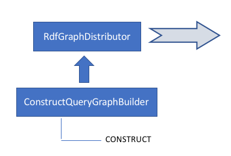

An RdfGraphDistributor uses one or more graph builders to build the in-memory graph, and then distributes it in Turtle format. In this example, there is only one graph builder.
A ConstructQueryGraphBuilder may execute one or more CONSTRUCT queries. In this example, there is only one query.

:data_distributor_department_word_cloud :actionName "department_word_cloud" .
:data_distributor_department_word_cloud
a <java:edu.cornell.library.scholars.webapp.controller.api.distribute.DataDistributor> ,
<java:edu.cornell.library.scholars.webapp.controller.api.distribute.rdf.RdfGraphDistributor> ;
:graphBuilder :graph_builder_department_word_cloud .
:graph_builder_department_word_cloud
a <java:edu.cornell.library.scholars.webapp.controller.api.distribute.rdf.graphbuilder.GraphBuilder> ,
<java:edu.cornell.library.scholars.webapp.controller.api.distribute.rdf.graphbuilder.ConstructQueryGraphBuilder> ;
:uriBinding "department" ;
:constructQuery """
PREFIX rdf: <http://www.w3.org/1999/02/22-rdf-syntax-ns#>
PREFIX rdfs: <http://www.w3.org/2000/01/rdf-schema#>
PREFIX bibo: <http://purl.org/ontology/bibo/>
PREFIX vivo: <http://vivoweb.org/ontology/core#>
PREFIX foaf: <http://xmlns.com/foaf/0.1/>
PREFIX vivoc: <http://scholars.cornell.edu/ontology/vivoc.owl#>
PREFIX hr: <http://scholars.cornell.edu/ontology/hr.owl#>
CONSTRUCT {
?person rdfs:label ?label .
?person vivo:freetextKeyword ?keyword .
}
WHERE {
{
?department hr:hasPosition ?posn .
?posn a vivo:Position .
?posn vivo:relates ?person .
?person a foaf:Person .
?person rdfs:label ?label .
?person vivo:relatedBy ?auth .
?auth a vivo:Authorship .
?auth vivo:relates ?pub .
?pub a bibo:Document .
?pub vivo:freetextKeyword ?keyword .
} UNION {
?department vivo:relatedBy ?affn .
?affn a vivoc:Affiliation .
?affn vivo:relates ?person .
?person a foaf:Person .
?person rdfs:label ?label .
?person vivo:relatedBy ?auth .
?auth a vivo:Authorship .
?auth vivo:relates ?pub .
?pub a bibo:Document .
?pub vivo:freetextKeyword ?keyword .
}
}
""" .